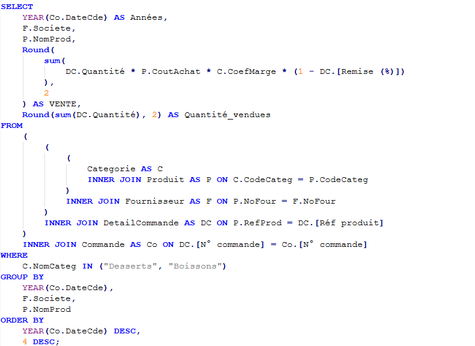
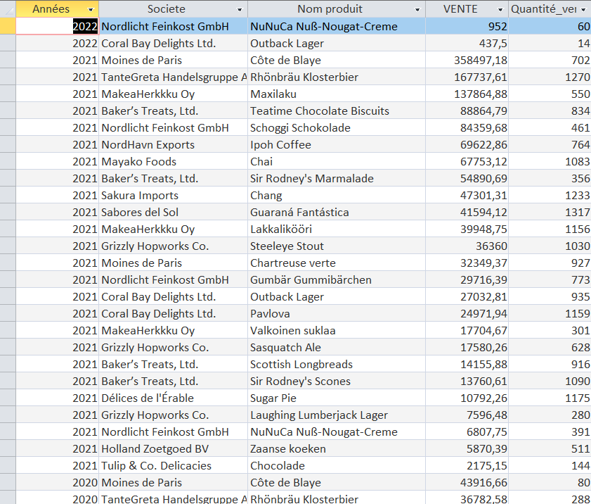

Dans une réflexion en lien avec la santé : On veut comme indicateur le chiffre d’affaires généré (montant total des ventes) annuel pour les catégories desserts ou boissons.


L'intérêt de voir le CA annuel des desserts ou boissons, c'est de voir les produits qui sont mauvais pour la santé sont consommée par ses clients de manières assez régulières et en grandes quantitées pour ainsi agir en fontion du produits
La requête classe, année par année, les produits par CA décroissant, avec le fournisseur et la quantité vendue. Cela permet de repérer les produits les plus vendus à surveiller pour la santé des clients, et les fournisseurs chez qui revoir les quantités commandées.